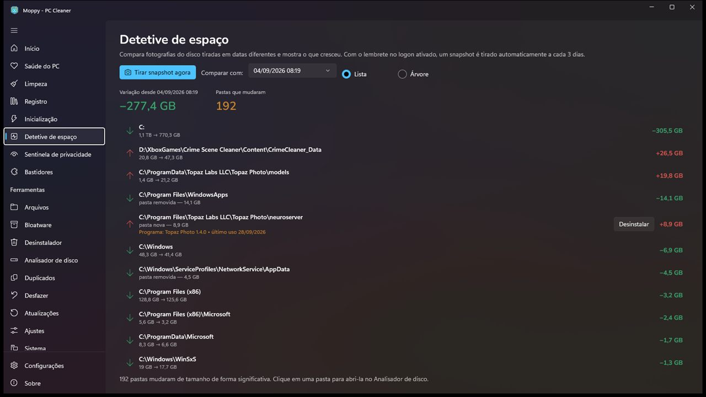
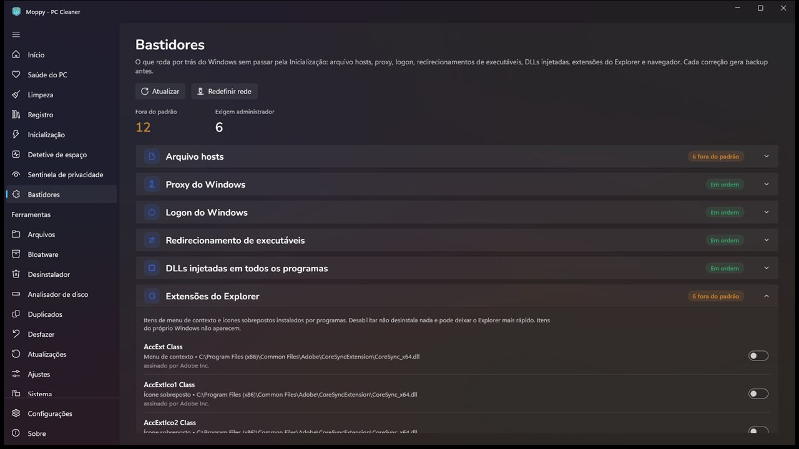
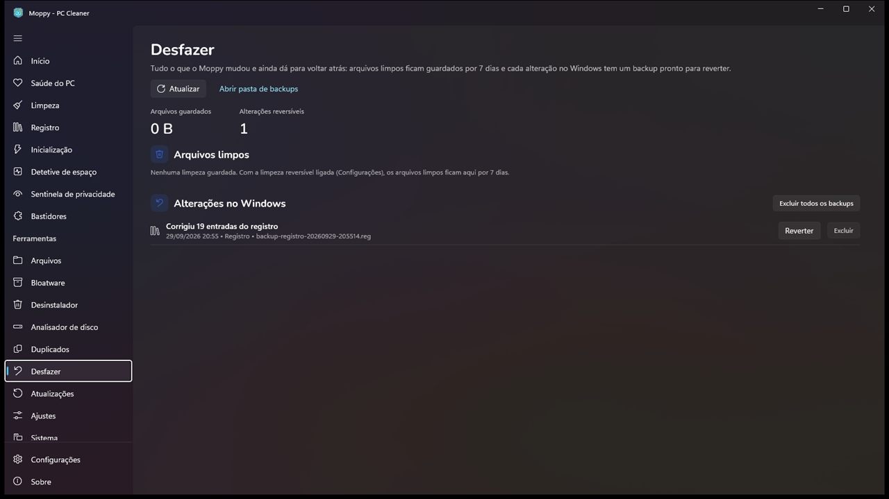
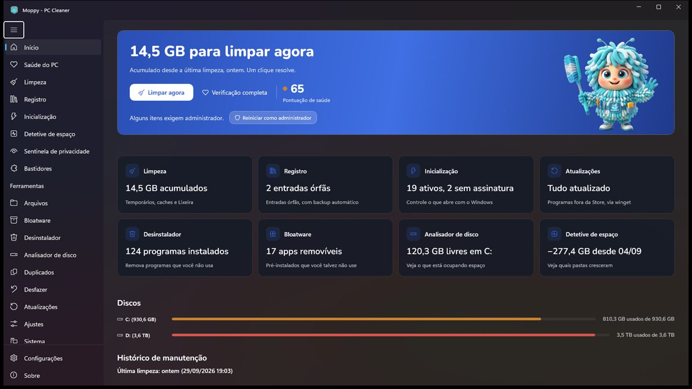

Cansou de cinco utilitários feios para cuidar do Windows?
O Moppy junta limpeza, espaço em disco, inicialização, desinstalação e privacidade num app só, nativo do Windows 11, com cara de Windows 11. E nada do que ele faz é sem volta.
 Compra única, R$ 39,90. Teste grátis por 15 dias.
Compra única, R$ 39,90. Teste grátis por 15 dias.
Três coisas que você não encontra nos outros
O resto é o que todo limpador faz, e o Moppy faz também. Estas três ele acrescentou porque faziam falta.

Detetive de espaço
"Eu tinha 40 GB livres semana passada, cadê?" Ele fotografa o disco de tempos em tempos e mostra quais pastas cresceram, quanto, e qual programa é o dono.

Bastidores
O que roda por fora da Inicialização: hosts, proxy, extensões do Explorer, tarefas agendadas e serviços de atualização de terceiros. Só o que está fora do padrão, explicado, com interruptor reversível.

Desfazer de verdade
Arquivos limpos ficam 7 dias em quarentena. Cada ajuste no Windows gera um backup. Uma página lista tudo com um botão Reverter. Errou? Um clique.
Um app no lugar de cinco
A rotina de manutenção costuma exigir vários programas, cada um com a interface de uma década diferente. O Moppy cobre a lista inteira com uma cara só.

- Limpeza de temporários, caches e Lixeira47 categorias
- Espaço em disco: lista, mapa e árvore+ Detetive
- Inicialização com nível de confiança por itemassinatura e origem
- Desinstalador com caça-resíduospastas e chaves que sobram
- Duplicados e fotos parecidaspor conteúdo
- Bloatware, ajustes do Windows, reparocom backup
- Jogos e discos virtuaisSteam, Xbox, WSL, Docker
- Sentinela de privacidadecâmera, microfone, localização
Quatro regras que ele segue
Nada é irreversível
Quarentena de 7 dias para arquivos e backup .reg para cada ajuste. A página Desfazer lista tudo.
Nunca eleva sozinho
Abre como usuário comum. O que exige administrador vem marcado, e só roda se você pedir.
Nenhum número para assustar
Vermelho só quando é problema. Cada medidor na tela responde a uma pergunta sua.
Nada sai do seu PC
Sem conta, sem telemetria, sem anúncio. A compra única é a única receita do app.
Preço
Teste grátis de 15 dias com o app completo, direto da Microsoft Store. Atualizações pela própria Store. Sem versão Pro, sem "extras" no instalador.
Perguntas comuns
O Sensor de Armazenamento do Windows já não faz isso?
Para temporários, faz, e o Moppy diz isso na tela. O que ele acrescenta é o detetive de espaço, os bastidores, a sentinela, o caça-resíduos do desinstalador e o desfazer de tudo.
Limpador de registro não é picaretagem?
Como promessa de velocidade, é. O Moppy só remove entradas que apontam para arquivos que não existem mais, faz backup antes e não promete deixar o Windows mais rápido.
Por que só na Microsoft Store?
Instalação isolada, atualização automática e um processo de revisão que já fez o app mudar duas vezes para melhor. Uma versão direta pode vir depois.
Ele instala atualizações de outros programas?
Não. A Store não permite. Ele mostra o que está desatualizado e entrega o comando do winget para você rodar.
Quem faz o Moppy?
Um desenvolvedor só, no Brasil, que mantinha o PC da família com cinco ferramentas e cansou. Publicado como Lumat Studio.